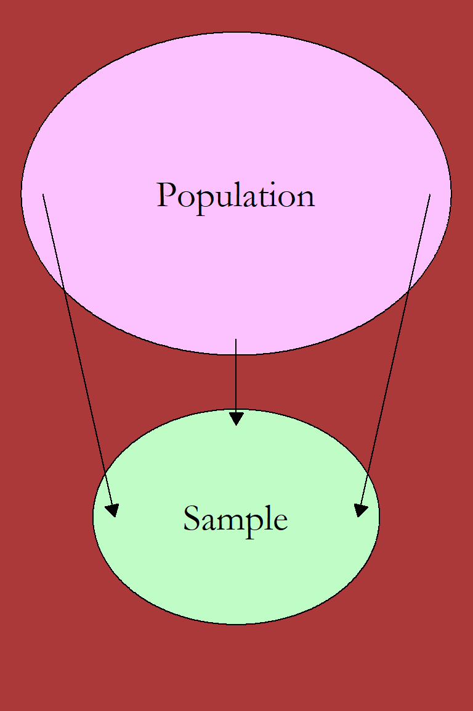
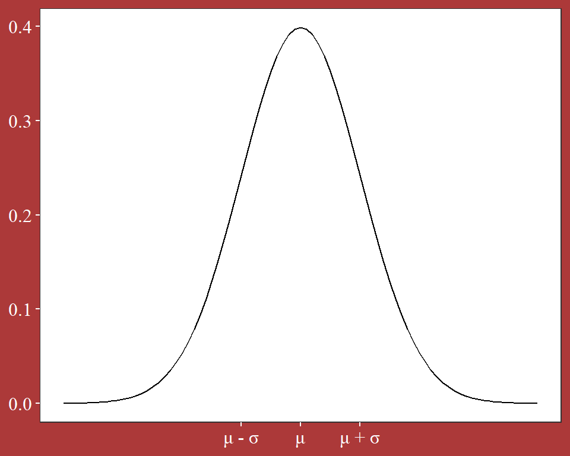
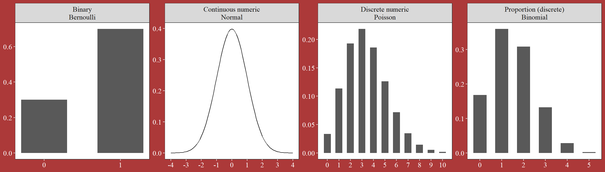
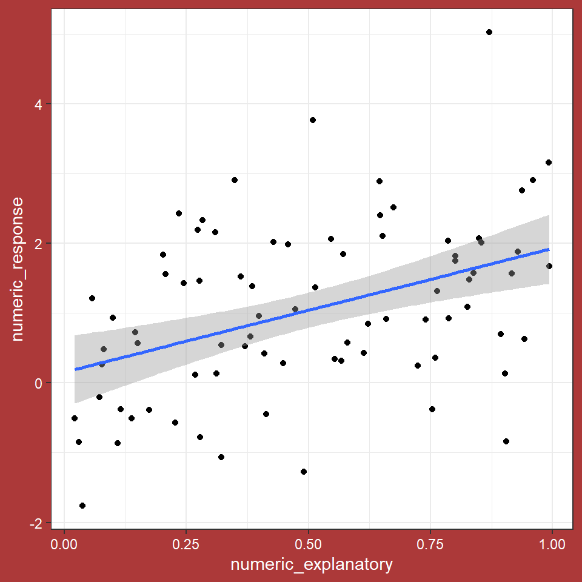

Illustration: Amrei Binzer-Panchal
Basic Biostatistics and Bioinformatics
Common statistical tests
Swedish University of Agricultural Sciences, Alnarp
10 March 2025
Basic Biostatistics and Bioinformatics
A seminar series on the fundamentals
Organised by SLUBI and Statistics at SLU
Presentation of background and a practical exercise
Topic suggestions are welcome
SLUBI
- SLU bioinformatics center
- Weekly online drop-in (Wednesdays at 13.00)
- slubi@slu.se, https://www.slubi.se
- Alnarp: Lizel Potgieter (Dept. of Plant Breeding)
Statistics at SLU
- SLU statistics center
- Free consultations for all SLU staff
- statistics@slu.se
- Alnarp: Jan-Eric Englund and Adam Flöhr (Dept. of Biosystems and Technology)
Today
Some fundamental ideas
Type of response variable
Type of explanatory variable(s)
Method of data collection
Linear models as a unifying approach
Fundamental ideas
Simplification for the sake of generalization
Descriptive
- Summarizing collected data
Inferential
- Tests to identify underlying patterns
Predictive
- Projecting to non-observed cases
Population to sample
We generalize to some population of individual units
Seldom possible to observe full population
Draw a subset of individuals (a sample)
This sampling has some randomness too it
but given some assumptions about the population and the method of drawing a sample, we know what the sample should look like

Sample to test
This population-sample setup is the basis of null hypothesis significance testing
Assume a certain population property (a null hypothesis)
Calculate the probability of getting the observed sample if that hypothesis is true (a p-value)
If that probability is small, the null hypothesis is assumed false (a significant result)

Choice of model/test
NHST is a general setup for inference
The exact type of test depends on the situation
Three main components
Type of response variable
Type of explanatory variables
Method of data collection
Type of response variable
The response variable is whatever property we are measuring
Two connected matters
The type of variable
The distribution of the outcomes
Some typical categorisations
Quantitative or qualitative
- Quantitative: numerical
- Qualitative: non-numerical
Discrete or continuous numerical variables
- Discrete: subset of numbers as possible outcomes
- Typically whole numbers (1, 2, 3 etc)
- Continuous: any decimal number is a possible outcome
Type of outcome
- Binary variables. Two possible outcomes
- Proportions. Outcomes between zero and one
- Discrete case: number of successes of a total
- Continuous case: any number in the 0-to-1-range
Measurements of scale
Also known as Stevens’ typology
- Nominal
- Names. Outcomes in categories
- Two outcomes are either equal or different
- Ordinal
- Order. Outcomes in ordered categories
- One outcome is smaller, equal or greater than another
- Interval
- Numerical outcome
- The difference between two outcomes is meaningful
- Ratio
- Numerical outcome
- The ratio of two outcomes is meaningful
Distributions
The observations have some random variation
This randomness can be expressed with a probability distribution
The distribution assigns a probability for each possible outcome
Distributions depend on parameters, estimated from collected data

The type of distribution depends on the type of variable
| Variable type | Scale | Common distribution |
|---|---|---|
| Continuous numeric | Interval, ratio | Normal distribution |
| Discrete numeric | Interval, ratio | Poisson distribution |
| Binary | Nominal | Bernoulli distribution |
| Discrete proportion | Interval, ratio | Binomial distribution |
| Categorical | Nominal, ordinal | Ad-hoc distributions |

Type of explanatory variable
The scientific question is typically to see how the response depends on another variable
Often called the explanatory or independent variable
Two distinct cases
- Categorical explanatory variable
- The explanatory variable specifies a group
- Want to test for a group difference
- Test choice depends on number of groups
- Numerical explanatory variable
- Want to test for a connection between explanatory variables and response variables
Data collection
Test choice also depends on the method of data collection
Most fundamental tests assume observations are independent random draws from the population
When comparing two treatment groups the data is often in paired observations
The observational units are divided into pairs and each treatment group is used once
This generalizes to multiple groups as blocks
The observational units are divided into blocks and each treatment group is used once per block
Observational units and pseudo-replicates
Another common collection trait is multiple observation on the same observational unit
- Multiple leafs from a plant
- Multiple soil samples from the same treatment plot
- Technical replicates of the same biological sample
This will result in non-independent observations
Sometimes referred to as pseudo-replicates
One can aggregate by taking the average (mean)
Choice of test
We get different test for different situations
The setup is always the same:
- The null hypothesis is that there are no differences / no connections between variables
- The p-value captures the probability of the observed data if that null is true
- A low p-value gives rejection of the null
In the background a test-value is calculated and the p-value is based on that value following a specific test-distribution
Tests are typically named after that distribution (t-tests, F-tests, \(\chi^2\)-tests) or after an early user of the test
Table of basic tests
| Response \ Explanatory | Categorical | Numerical |
|---|---|---|
| Nominal | \(\chi^2\) | (Nominal regression) |
| Ordinal | \(\chi^2\) | (Ordinal regression) |
| Binary | \(\chi^2\)- or z-test | (Binary/logistic regression) |
| Interval/Ratio | t-test or F-test | Correlation or regression |
| Non-parametric | Kruskal-Wallis | Spearman correlation |
Cases in brackets are not common introductory material
It is also possible to see the t-test (or F-test) for ordinal or
non-normal numerical responses
This can be justified by the central limit theorem
Example data
We can create some random data in R
Three different explanatory variables
- one grouping with 2 levels,
- one grouping with 4 levels,
- and one numerical
Three different response variables:
- a nominal response,
- a binary response,
- and a numeric response
library(tidyverse)
set.seed(250310)
dat <- tibble(group_1 = rep(c("A","B"), each = 40),
group_2 = rep(c("a", "b", "c", "d"), each = 20),
numeric_explanatory = runif(80),
nominal_response = sample(c("a", "b", "c"), 80, replace = T),
binary_response = sample(c("a", "b"), 80, replace = T),
numeric_response = rnorm(80) + (group_1 == "A") + numeric_explanatory)
dat## # A tibble: 80 × 6
## group_1 group_2 numeric_explanatory nominal_response binary_response
## <chr> <chr> <dbl> <chr> <chr>
## 1 A a 0.235 b a
## 2 A a 0.310 b b
## 3 A a 0.244 b b
## 4 A a 0.568 b a
## 5 A a 0.0716 b b
## 6 A a 0.386 b b
## 7 A a 0.509 b b
## 8 A a 0.458 c a
## 9 A a 0.399 c b
## 10 A a 0.647 c b
## # ℹ 70 more rows
## # ℹ 1 more variable: numeric_response <dbl>Nominal or ordinal response
Categorical explanatory
Connection between variables can be tested with a \(\chi^2\)-test on a cross-table
##
## a b c
## a 6 9 5
## b 9 5 6
## c 5 9 6
## d 7 9 4Binary response
Categorical explanatory with more than two categories
Connection between variables can be tested with a \(\chi^2\)-test on a cross-table
##
## a b
## a 5 15
## b 10 10
## c 8 12
## d 8 12Binary response
Categorical explanatory with two categories
Can be tested with a z-test
##
## a b
## A 15 25
## B 16 24##
## 2-sample test for equality of proportions with continuity correction
##
## data: c(15, 16) out of c(40, 40)
## X-squared = 0, df = 1, p-value = 1
## alternative hypothesis: two.sided
## 95 percent confidence interval:
## -0.2634416 0.2134416
## sample estimates:
## prop 1 prop 2
## 0.375 0.400Interval / ratio response

Categorical explanatory with two categories
The two-sample t-test
Exact form depends on if data is paired or not
##
## Welch Two Sample t-test
##
## data: numeric_response by dat$group_1
## t = 3.92, df = 76.365, p-value = 0.0001917
## alternative hypothesis: true difference in means between group A and group B is not equal to 0
## 95 percent confidence interval:
## 0.4909192 1.5048311
## sample estimates:
## mean in group A mean in group B
## 1.5435224 0.5456472Categorical explanatory with more than two categories
F-test from an Anova model
## Analysis of Variance Table
##
## Response: numeric_response
## Df Sum Sq Mean Sq F value Pr(>F)
## group_2 3 24.438 8.1461 6.4114 0.000626 ***
## Residuals 76 96.564 1.2706
## ---
## Signif. codes: 0 '***' 0.001 '**' 0.01 '*' 0.05 '.' 0.1 ' ' 1Typically followed up with pairwise post-hoc-tests
## $emmeans
## group_2 emmean SE df lower.CL upper.CL
## a 1.314 0.252 76 0.812 1.816
## b 1.773 0.252 76 1.271 2.275
## c 0.300 0.252 76 -0.202 0.802
## d 0.791 0.252 76 0.289 1.293
##
## Confidence level used: 0.95
##
## $contrasts
## contrast estimate SE df t.ratio p.value
## a - b -0.460 0.356 76 -1.290 0.5722
## a - c 1.013 0.356 76 2.843 0.0287
## a - d 0.523 0.356 76 1.466 0.4629
## b - c 1.473 0.356 76 4.133 0.0005
## b - d 0.982 0.356 76 2.756 0.0361
## c - d -0.491 0.356 76 -1.377 0.5175
##
## P value adjustment: tukey method for comparing a family of 4 estimatesInterval / ratio response
Numerical explanatory
Connection between two numerical variables can be tested with correlation or regression
##
## Pearson's product-moment correlation
##
## data: dat$numeric_explanatory and dat$numeric_response
## t = 4.0504, df = 78, p-value = 0.0001198
## alternative hypothesis: true correlation is not equal to 0
## 95 percent confidence interval:
## 0.2170323 0.5831725
## sample estimates:
## cor
## 0.4168705Alternatively as a regression
## Analysis of Variance Table
##
## Response: numeric_response
## Df Sum Sq Mean Sq F value Pr(>F)
## numeric_explanatory 1 21.028 21.0279 16.406 0.0001198 ***
## Residuals 78 99.974 1.2817
## ---
## Signif. codes: 0 '***' 0.001 '**' 0.01 '*' 0.05 '.' 0.1 ' ' 1
Non-parametric methods
Non-parametric methods are used when distribution assumptions are not met
Categorical explanatory
A Kruskal-Wallis test for overall differences
##
## Kruskal-Wallis rank sum test
##
## data: numeric_response by group_2
## Kruskal-Wallis chi-squared = 14.464, df = 3, p-value = 0.002337Gives if there are any differences
Pairwise testing can be done with a Dunn test or repeated Kruskal-Wallis tests

Numerical explanatory
The previously used correlation is the Pearson correlation
That test relies on an underlying normality assumption
Spearman correlation is a variant which drops that assumption
##
## Spearman's rank correlation rho
##
## data: dat$numeric_explanatory and dat$numeric_response
## S = 50542, p-value = 0.000198
## alternative hypothesis: true rho is not equal to 0
## sample estimates:
## rho
## 0.4076184Connections to linear models
Many basic tests are specific cases of linear models
A model where the response is the sum of additive terms
Each term is an explanatory variable \(x\) multiplied with some parameter \(\beta\)
\[y_i = \beta_0 + \beta_1 x_{1i} + ... + \beta_p x_{pi} + \varepsilon\]
Direct examples are the Anova models and multiple regression models
t-tests
A t-test comparing two groups (assuming equal variance) is equivalent to an Anova model
## [1] 0.0001889247## Analysis of Variance Table
##
## Response: numeric_response
## Df Sum Sq Mean Sq F value Pr(>F)
## group_1 1 19.915 19.915 15.367 0.0001889 ***
## Residuals 78 101.087 1.296
## ---
## Signif. codes: 0 '***' 0.001 '**' 0.01 '*' 0.05 '.' 0.1 ' ' 1Frequency tests
\(\chi^2\)-tests are equivalent to tests on a Poisson model, a kind of GLM - generalized linear model
## [1] 0.7677293dat_freq <- dat %>% count(group_2, nominal_response)
mod <- glm(n ~ group_2 * nominal_response, dat_freq, family = "poisson")
anova(mod, test = "Rao")## Analysis of Deviance Table
##
## Model: poisson, link: log
##
## Response: n
##
## Terms added sequentially (first to last)
##
##
## Df Deviance Resid. Df Resid. Dev Rao Pr(>Chi)
## NULL 11 5.7805
## group_2 3 0.0000 8 5.7805 0.0000
## nominal_response 2 2.3059 6 3.4746 2.2750 0.3206
## group_2:nominal_response 6 3.4746 0 0.0000 3.3201 0.7677Non-parametric tests
Non-parametric tests are similar, but not equivalent, to standard tests on the ranks of the numerical values
The rank is the order number of the variable
For an explanatory numerical variable
Spearman correlation is the Pearson correlation between ranks
## [1] 0.0001748424## [1] 0.0001748424Additional resources
Flowcharts
https://guides.library.lincoln.ac.uk/mash/choosing_a_test
https://www.med.soton.ac.uk/resmethods/statisticalnotes/which_test_flow.htm
Literature
Thulin - Modern Statistics with R https://www.modernstatisticswithr.com/
Lindelöv - Common statistical tests are linear models https://lindeloev.github.io/tests-as-linear/
The End
Thanks for your attention
3Bs will return in about two weeks